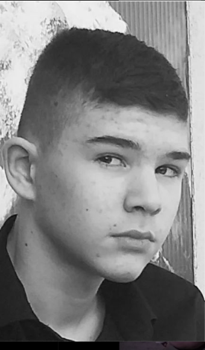
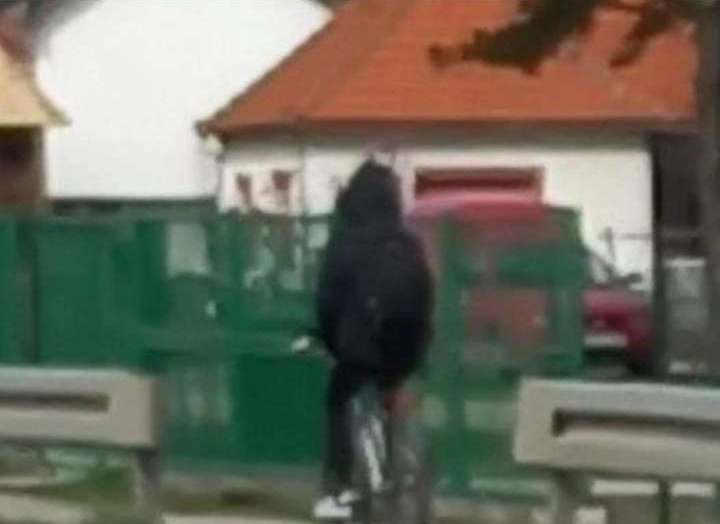
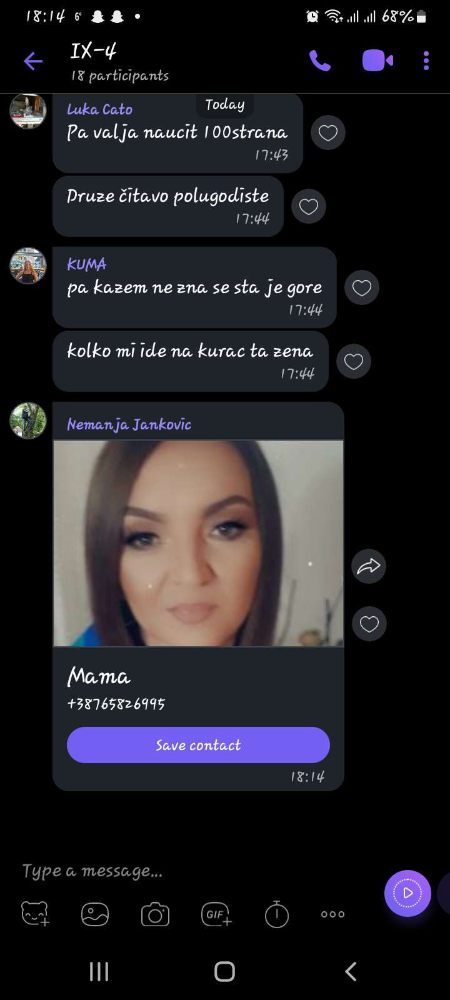
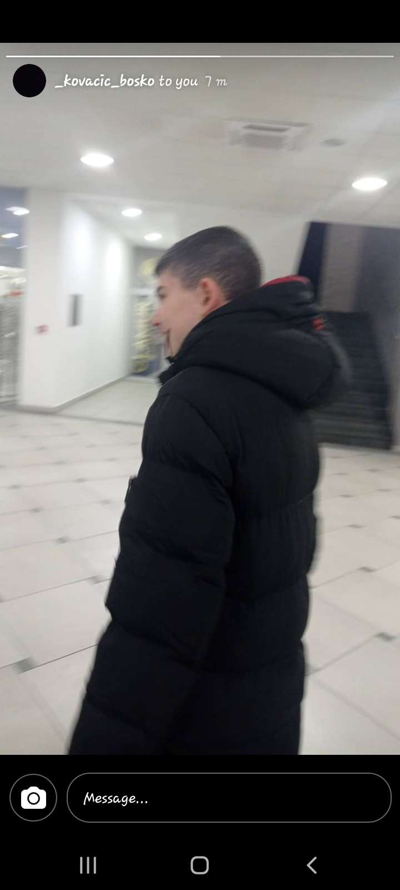
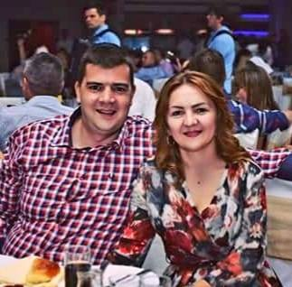

⚠️⚠️⚠️⚠️⚠️PAŽNjA OVAJ SAJT JE ISKLjUČIVO NAPRAVLjEN ZA ŠALU I ZABAVU I DIO SA MASAKROM NIJE STVARAN DOK OSTALI SASDRŽAJ JESTE⚠️⚠️⚠️⚠️⚠️
Nemanja Janković
Ovo je Nemanja Janković(Šmeca,Jednorog,Gazelica,Labudica,Momak koji ne izlazi iz kuće,Peder🏳️🌈...) i ovo je njegova životna priča.
Dakle na ovom sajtu ćete saznati nešto više o Nemanji Jankoviću i saznaćete kako je i kada bio napolju.Što se tiče teksta neće ga biti mnogo jer ko ga malo bolje poznaje shvatiće odmah zašto a ko ga ne poznaje saznaće u nastavku.Na sajtu će biti nekoliko fotografija i par video zapisa.
Jedino što vam mogu reći je:UŽIVAJTE U SADRŽAJU!!!!
Pa da počnemo

Ovo je naš Nemanja i ovdje je bio u nekoj krimi fazi i uspiješno je uhvaćen na kameri u pekari/pekoteci "BRAĆA LAZIĆ"(u bašti).
HAHAHAHAHAHAHAHAHAHAHA da je bar tako neki bi se onesvijestili kada bi ga vidjeli napoljiu jer je to nemoguće zamisliti(za više ostanite do kraja) ovde je uslikan 20.aprila(04).2023.godine ispred pekare.Ovde je sjeo posle slikanja za maturu pa ga je bilo moguće vidjeti u javnosti.
Zapamtite dobro ovu facu!!!
Vrijeme je da vam pokažemo neke fotografije i video zapise ovog momka

Ova fotografija ce začuditi mnoge od vas ali ništa strašno išao je samo do škole do koje ne bi išao da nije obavezna.Slikan je 20.marta(03).2023.godine kod vrtića "Čika Jova Zmaj".
Ovaj video zapis je snimljen 05.novembra(11).2022.godine i napravljen je kako bi se Nemanja Janković prozivao.

Ova fotografija nam pokazuje koliko je naš dobri Nemanja Janković nespretan i greškom poslao kontakt svoje majke.
Da li se sjećate one face koju sam vam napomenuo da zapamtite eh vrijeme je da vam pokažem zašto sam vam to rekao
Nemanja Janković iako izgleda kao jedno bezopasno bićče on je zapravo sve samo nije to.On je napravio izuzeak i izašao iz kuće 06.maja(05).2023.godine kako bi počinio teški masakr ali nije mogao izdržati da bude napolju toliko dugo.Za više saznajte na sledećem PORTALU.
Socijalni eksperiment
Ovaj video zapis je urađen kao socijalni eksperiment 03.juna(06).2023.godine o privlačnosti ovog momka ali on nikada neće imati curu/dečka/trasendžera/aseksualca/panseksualca/... jer ČOVJEK JEBENO NE IZLAZI IZ KUĆE!!!!
Vrijeme je da otkrijemo zašto je ovog čovjeka nemoguće vidjeti u javnosti
Zato što Nemanja Janković boluje od rijetke i neizlječive bolesti "NEIZLAZIOZE" i to je glavni razlog zašto ne izlazi iz kuće.Još jedan razlog zbog kojeg ga je nemoguće vidjeti u javnosti jeste taj što on ima poremećaj "ASOCIJALNOSTI" što se može nazvati i manjak socijalnosti.I postoji i treći razlog a to je zato što je on negativno naelektrisan a njegova kuća je pozitivno nalektrisana pa se oni međusobno privlače kao neki elektromagnet(OVO JE LIČNO I NAUČNO DOKAZALA "RADA VLAČIĆ").
Vrijeme je da saznate pricu o izlasku iz kuce zbog koje ste na ovom sajtu

Ova fotografija je slikana jednom nevjerovatnom prilikom u Tržnom centru "Spektar" 24.marta(03).2023.godine samo dva dana posle fotografije na biciklu.
Bio je to jedan izuzetno težak i skoro nemoguć proces,čak je se nekoliko FBI agenata moralo pridružiti samom postupku ali nakon duge i uspiješne operacije isplatio se trud.Nemanja Janković konačno biva oslobođen od KUĆE i prvo je došao u Tržni centar "Spektar" gdje smo se i našli (Ognjen Ikonić,Nemanja Janković i Boško Kovačić) posle toga otišli smo u Zabavni centar "OSSA" gdje smo igrali bilijar.Ovaj dečko(Nemanja Janković) ima ogroman potencijal za šalu i smijeh ali jedna jako velika šteta je što taj potencijal ne može da ispolji jer ČOVJEK JEBENO NE IZLAZI IZ KUĆE ista situacija je i sa bilijarom (mali nije loš).Posle toga smo otišli u parkić Patkovača gdje smo se klackali...Onda smo se na kraju razišli.Ovaj događaj se ponovio samo još jednom,znači nerealno!!!
Ovaj video je nastao u parkiću Patkovača pored SLOT GAME-a na taj isti dan.

Sa lijeve strane mu se nalaze roditelji(Slaviša Janković i Slađana Janković),a sa desne strane mu se nalazi stariji brat(Nikola Janković(KRKS)).
Na žalost ne možemo da vam prikažemo više sadržaja jer više sadržaja ne postoji to je to što se zna o ovom momku.😭😭😭😭😭
 Ovo je Nemanja Janković(Šmeca,Jednorog,Gazelica,Labudica,Momak koji ne izlazi iz kuće,Peder🏳️🌈...) i ovo je njegova životna priča.
Ovo je Nemanja Janković(Šmeca,Jednorog,Gazelica,Labudica,Momak koji ne izlazi iz kuće,Peder🏳️🌈...) i ovo je njegova životna priča.